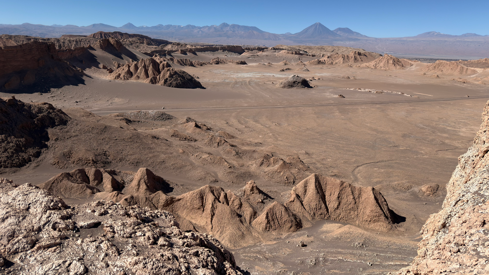
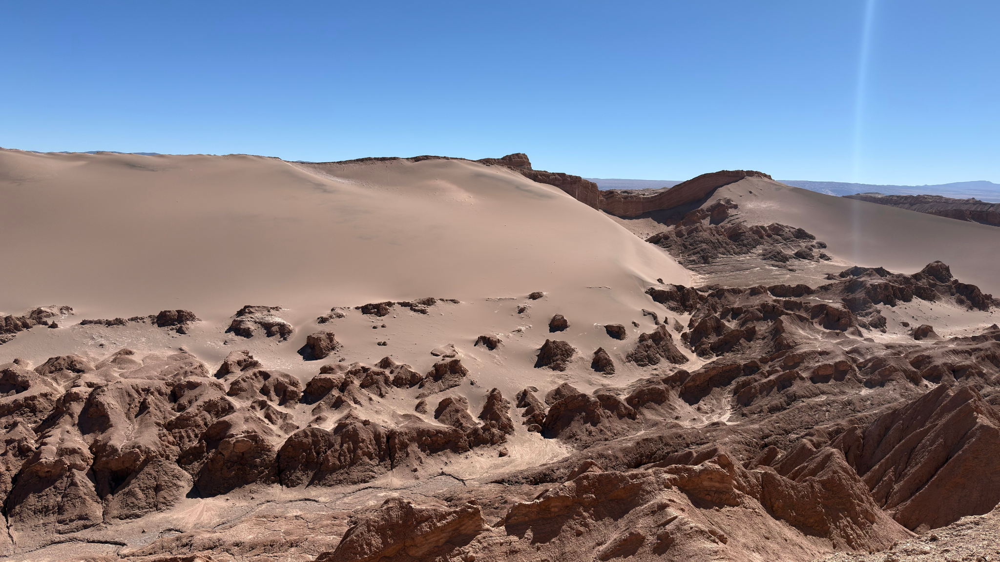
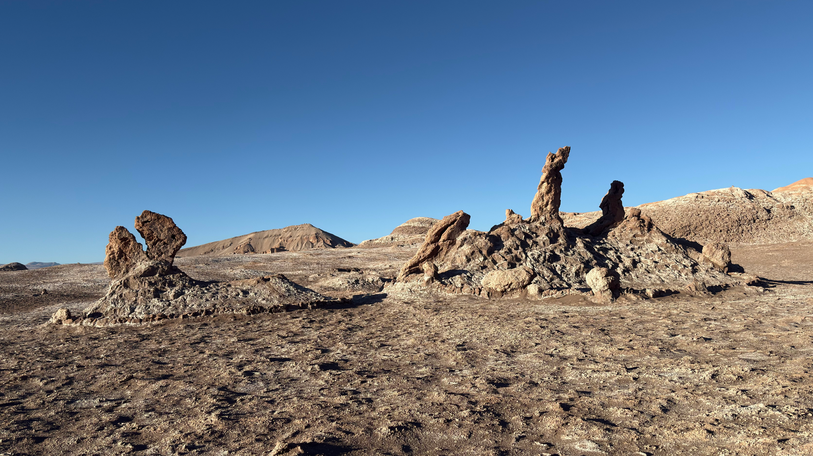
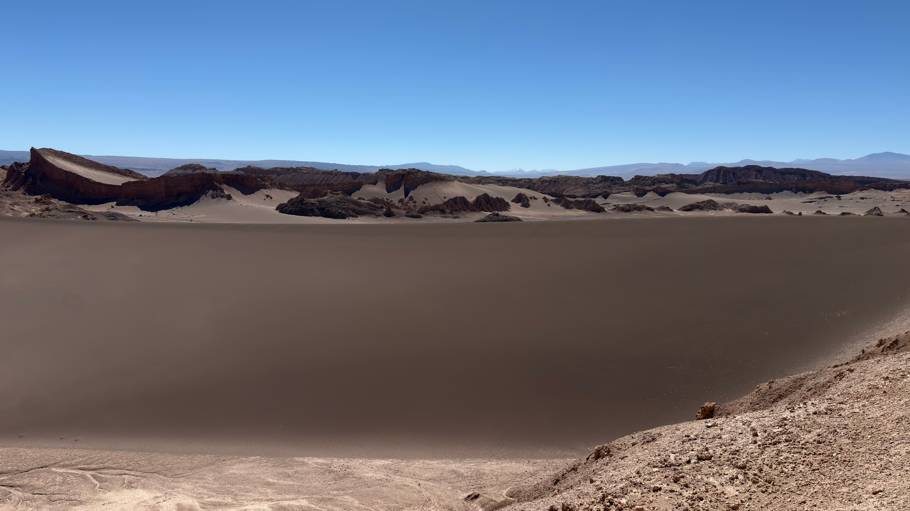
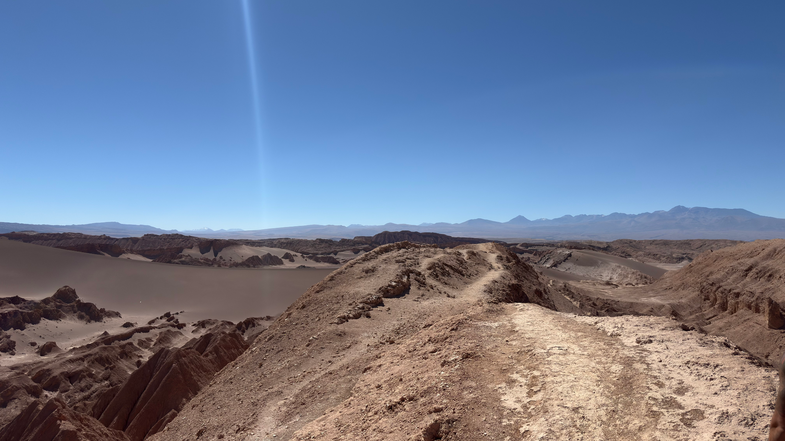

CHILE · SAN PEDRO DE ATACAMA
Valle de la Luna
Também conhecido como Valle de la Luna.
Um dos lugares que mais surpreendeu a gente no Atacama. Entre areia, paredões e paisagens que parecem de outro planeta, fomos conhecer o Valle de la Luna e registramos a experiência do nosso jeito: vivendo primeiro e contando depois.





Quer ver como foi de verdade?
No vídeo mostramos o caminho, o passeio e nossas impressões por lá. A experiência completa está no nosso canal.
Se o player não abrir no navegador, use o botão abaixo para assistir diretamente no YouTube.
▶ ASSISTIR NO YOUTUBEOnde ficaSan Pedro de Atacama, Chile
DistânciaA cerca de 2 km de San Pedro de Atacama
IngressoConsulte o valor atualizado antes da visita
Os valores e regras de acesso podem mudar. Preferimos deixar aqui só o essencial — a experiência completa está no vídeo.